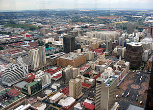

Pre Historic Era
The region surrounding Johannesburg was originally inhabited by hunter-gatherers who used stone tools. The Magaliesberg valley north of Johannesburg was ideal for farming, and farmers settled there by the 6th century. By the 13th century, stone-walled ruins of Sotho–Tswana towns (e.g Kweneng) and villages are scattered around the parts of the former Transvaal in which Johannesburg is situated. Many of these sites contain the ruins of Sotho–Tswana mines and iron smelting furnaces, suggesting that the area was being exploited for its mineral wealth before the arrival of Europeans or the discovery of gold. The most prominent site within Johannesburg is Melville Koppies, which contains an iron smelting furnace.

Republican Era
European Settlement and gold mining
After the Great Trek European pastoralists also started settling in the Transvaal. Some of them chose to farm where Johannesburg was to rise later. Each burgher (citizen) was entitled to at least one farm, measuring 1500 morgen or about 3100 acres. The first recorded discovery of gold on the Witwatersrand was made by Jan Gerrit Bantjes in June 1884, on the farm Vogelstruisfontein. Other farms to become famous later included Langlaagte, Turffontein, Doornfontein and Braamfontein. George Harrison is today credited as the man who discovered an outcrop of the Main Reef of gold on the farm Langlaagte in February 1886. On 12 May 1886 Harrison and his partner, George Walker, entered into a prospecting agreement with the owner of Langlaagte, one G.C. Oosthuizen. Two days later Colonel Ignatius Ferreira staked out his camp on Turffontein to serve as a centre for diggers. Louwrens Geldenhuys found the Main Reef on Turffontein and Henry Nourse located it on Doornfontein. On 8 September 1886 nine farms, extending from Driefontein in the east to Roodepoort in the west, were declared public diggings Carl von Brandis was appointed as the mining commissioner for the area. On 8 November 1886 a diggers' committee was elected to assist the mining commissioner in the execution of his duties.
Nineteenth Century Stamp Battery to Crush Ore
The earliest mining activities were concentrated along and adjacent to the outcrops of the main reef. Initially the diggers could perform the work themselves, using relatively little equipment. As the pits grew deeper, they needed additional labourers and machinery. Black Africans were recruited to perform the unskilled work. Machinery had to be imported from Europe and fuel had to be found to power the machinery. The discovery of coal on the far east Rand at Springs and Boksburg, as well as the construction of the Rand Steam Tram from the colliery to the gold fields and into Johannesburg facilitated the growth of the industry in its early years. Soon, too, the railway arrived from the coast: in September 1892 the Cape railway reached the Rand. Two years later the line from Lourenço Marques (now Maputo) arrived in the Republic and a third route was opened from Durban the next year. In 1890 the MacArthur-Forrest cyanidation process successfully overcame the problems of treating the refractory ore from deeper levels.
It soon became apparent that individual diggers were not equal to the task of mining gold in Johannesburg. Wealth could only be recovered by means of deep-shaft working and by capital-intensive companies having the necessary technical skills. Individual claims were soon joined into small mining groups. The amalgamation of smaller mining groups became a common occurrence and by 1895 the scene was dominated by a limited number of large monopolistic companies. These companies were: the Wernher-Beit-Eckstein group, Consolidated Goldfields, the J B Robinson group, the S. Neumann group, the Albu group, the A Goerz group, the Anglo-French group and the Lewis-Marks group. Of these, Cecil John Rhodes's Consolidated Goldfields was the most important.
Johannesburg Stock Exchange in 1893
In 1893 Johannesburg's first stock exchange was opened. From then until today Johannesburg has been the seat of the South African stock exchange and the country's financial heartland. The Johannesburg Stock Exchange is presently in Sandton, Johannesburg.